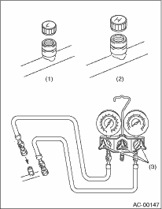

CAUTION:
• During operation, be sure to wear protective goggles and protective gloves.
• Connect the refrigerant recovery system with the manifold gauge set to discharge the refrigerant from the A/C system and recycle the gas.
• When recycling the discharged refrigerant, keep service cans on hand. Because the recovery rate with the recovery system is approx. 90%, service cans are necessary to charge the refrigerant.
• Follow the detailed operation procedure described in the operation manual attached to the refrigerant recovery system.
1. Perform the compressor oil return operation. 
2. Stop the engine.
3. Make sure the valves on low-/high-pressure sides of manifold gauge set are fully closed.

|
L: |
Low pressure gauge |
|
H: |
High-pressure gauge |
|
(1) |
Low pressure valve |
|
(2) |
Vacuum pump valve |
|
(3) |
High pressure valve |
|
(4) |
For low pressure |
|
(5) |
For vacuum pump |
|
(6) |
For high pressure |
4. Install the low-/high-pressure hoses to the service ports on the low-/high-pressure sides of the vehicle respectively.

|
(1) |
Low-pressure side service port |
|
(2) |
High-pressure side service port |
|
(3) |
Close |
5. Connect the center hose to the refrigerant recovery system.
6. Follow the operation manual to activate the refrigerant recovery system.